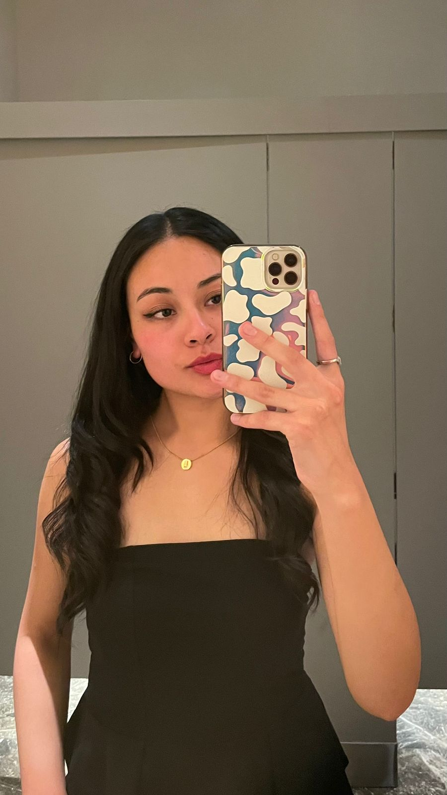
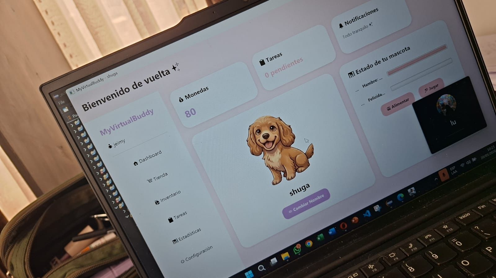

Licenciatura en Ingeniería de Sistemas
Universidad Católica Boliviana "San Pablo"
– Presente
Estudios universitarios en curso.

Estudiante de Ingeniería de Sistemas | Liderazgo STEM | Divulgación científica
Apasionada por la tecnología, la ciencia, la innovación y la creación de comunidades que generan oportunidades.
La Paz, BoliviaSoy una joven boliviana creativa, responsable y con vocación de servicio, estudiante de Ingeniería de Sistemas en la Universidad Católica Boliviana "San Pablo". Desde pequeña me interesan las áreas STEM, el arte y los deportes, intereses que me han llevado a participar en competencias, cursos, eventos científicos y proyectos sociales.
A través de mi participación en comunidades tecnológicas y científicas, he desarrollado experiencia en liderazgo juvenil, organización de actividades, comunicación, divulgación científica y trabajo colaborativo.
Me motiva crear espacios de aprendizaje, acercar la ciencia y la tecnología a más personas y contribuir a iniciativas que promuevan la educación, la innovación y la participación de mujeres y jóvenes en STEM.
Universidad Católica Boliviana "San Pablo"
– Presente
Estudios universitarios en curso.
Centro Boliviano Americano (CBA)
–
Colegio Santa Ana
–
Mi participación en organizaciones educativas, tecnológicas y científicas me permite colaborar en proyectos, coordinar actividades y fomentar el aprendizaje en comunidad.
Universidad Católica Boliviana "San Pablo"
– Presente
Aerospace Science Academy Bolivia
– Presente
Microsoft User Group Bolivia
– Presente
Rama Estudiantil IEEE – Universidad Católica Boliviana
– Presente
Bolivia Joven
NeuroTech UCB
– Presente
Proyecto MOTRIX
– Presente
CienciaLink
– Presente
Club de Chicas Programadoras
–
| Idioma | Nivel |
|---|---|
| Español | Nativo |
| Inglés | Avanzado |
Participante alumni.
–Participante alumni.
–Miembro del equipo.
–Miembro del equipo.
–Voluntaria.
–Voluntaria.
– PresenteCapitana de la delegación nacional.
–– Presente
Comunidad que busca visibilizar oportunidades para mujeres en campos STEM en Bolivia, impulsando talleres y programas que promueven su participación en ciencia y tecnología.
Enfoque: inclusión, educación y liderazgo femenino en STEM.
– Presente
Comunidad orientada a enseñar, motivar y comprometer a más personas con la ciencia y la tecnología, sin importar su edad, género o profesión.
Enfoque: aprendizaje, tecnología y divulgación científica.
Organización: IEEE Computer Society UCB.
Iniciativa interdisciplinaria que propone conectar el cine con conceptos de neurociencia mediante proyecciones, introducciones educativas y debates guiados.
Proyecto de tecnología aplicada a la rehabilitación, en el que colaboro con el desarrollo de una página web utilizando HTML5 nativo.
Área: desarrollo web y tecnología aplicada a la salud.
Proyecto académico de planificación de tareas orientado a estudiantes, con funciones para organizar actividades, establecer prioridades y realizar seguimiento de tareas.
Tecnologías: HTML5, CSS3, JavaScript y PHP.
AMUJI Latinoamérica
Reconocimiento por mi contribución y participación activa en proyectos y comunidades que buscan integrar a más mujeres en las áreas STEM.
– Presente
Participación vinculada a iniciativas de igualdad de género, educación de calidad y promoción de oportunidades para mujeres en tecnología.
Objetivos relacionados: ODS 5 – Igualdad de género y ODS 4 – Educación de calidad.
Explora mis proyectos de programación y desarrollo.
Los repositorios se cargarán si la consulta automática está configurada.

Estoy interesada en continuar aprendiendo y colaborar en iniciativas académicas, científicas, tecnológicas y sociales.
Si deseas comunicarte conmigo para una consulta o propuesta de colaboración, puedes utilizar el siguiente formulario. Los campos marcados son obligatorios.
También puedes escribirme directamente a mi correo electrónico .